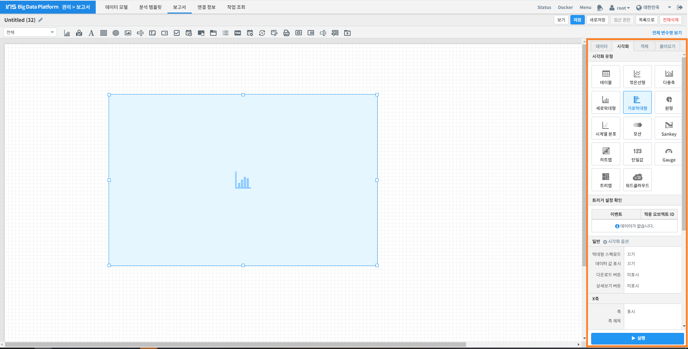
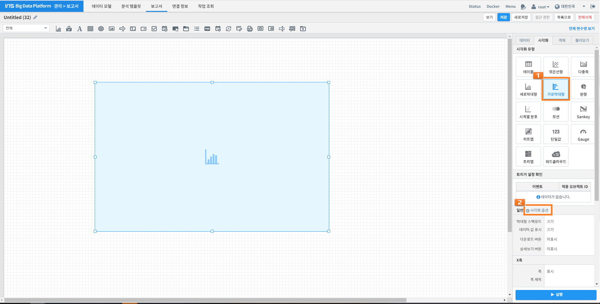
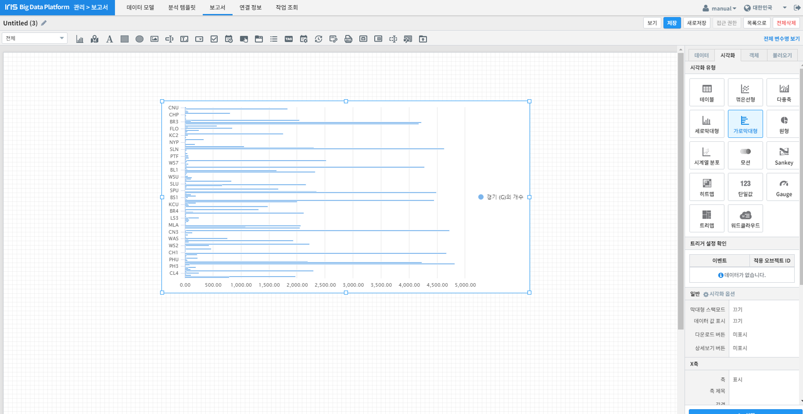
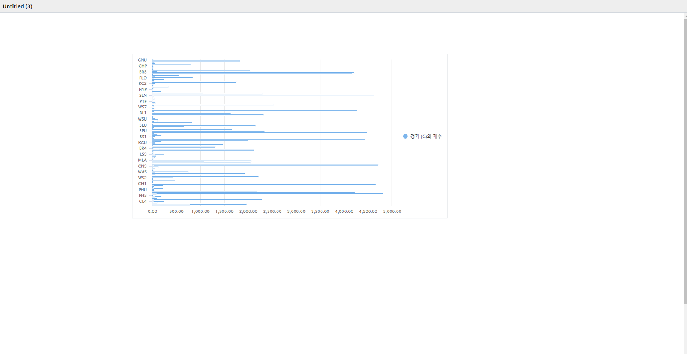

가로 막대형 차트 그리기¶
개요¶
본 문서는 가로 막대형 차트를 보고서에 추가하는 방법에 관하여 기술합니다. 데이터를 표현할 때 높이(또는 길이)로써 값을 표현하며, 이를 다른 값 또는 축과 비교할 수 있습니다. 중점을 두고 관찰하고자 하는 항목에 대해 다른 색상을 이용하여 사용자의 시선을 끌 수 있으며 직관적으로 정보를 전달 할 수 있습니다. 막대를 세로로 할 수도 있고 가로로 할 수도 있습니다. 가독성 면에선 항목이 적을수록 가로가 좋고 항목이 많을수록 세로가 좋습니다. 스택형은 데이터의 빈도를 그룹별로 누적 빈도를, 풀스택형은 전체를 기준으로 그룹별 상대적 비율(누적퍼센트)을 집계해 줍니다.
{kind=link}
가로 막대형 차트 그리기¶
가로 막대형 차트를 그리는 방법은 다음과 같습니다.
아래 절차는 보고서 편집 화면에서 진행됩니다.
가로 막대형 차트 영역 생성¶
위 화면에 주황색 상자로 표시된 《차트》 아이콘을 클릭한 후, 마우스 드래그 앤 드롭으로 가로 막대형 차트가 그려질 영역을 생성합니다.
데이터 설정¶
이어서 화면 우측의 《데이터》 탭에서 가로막대형를 그릴 때 사용될 데이터를 설정합니다.
위 예시 화면은 Batting Table 데이터의 전체 기간 중 팀 ID 별로 출현 빈도의 총합을 구한 설정을 보여주고 있습니다.
데이터 Command: * | stats count(G) by TEAMID
시각화 옵션 설정¶
데이터 설정이 끝나면 우측 《시각화》 탭으로 이동합니다.
《시각화 유형》에서 《가로막대형》를 선택한 후 하단의 《일반》 옆의 《시각화 옵션》을 클릭하십시오.
옵션 |
설명 |
|---|---|
막대형 스택모드, 데이터 값 표시, 다운로드 버튼, 상세보기 버튼 설정 |
|
가로막대형 차트의 X축 표시 여부, 축 제목, 레이블 회전 관련 설정 |
|
가로막대형 차트의 Y축 표시 여부, 축 제목, 레이블 회전 관련 설정 |
|
가로막대형 차트의 범례 및 범례 위치 관련 설정 |
|
가로막대형 차트 X축 및 Y축에 해당하는 데이터 관련 설정 |
{kind=link}
{kind=link}
{kind=link}
{kind=link}
{kind=link}
그리고자 하는 가로막대형 차트에 맞게 위 옵션들을 수정합니다.
결과 확인¶
설정을 마친 후 우측 하단의 [실행] 버튼을 클릭하면, 아래 그림과 같이 결과가 표시됩니다.
제대로 적용됐는지 확인하고자 한다면, 우측 상단의 [보기] 버튼 (주황색 상자로 표시)을 눌러 작성 결과를 다시 한 번 확인합니다.
결과가 정상적으로 표출될 경우, 작성 화면에서 [저장] 버튼을 눌러 결과를 저장합니다.
주의사항¶
[Notice 01] [보기] 버튼을 눌렀을 때, 차트가 자동으로 실행되지 않을 경우
차트의 경우, "자동 실행"을 설정하지 않을 경우 보고서 조회 시 자동으로 실행되지 않습니다.
[데이터] 탭 하단의 [데이터 실행방법 설정]에 있는 "자동 실행"을 선택한 후 다시 확인해보시기 바랍니다.
(아래 그림 참조)
{kind=link}
[Notice 02] "키 값"과 "가중치" 드롭다운 메뉴에 아무 컬럼도 표시되지 않을 경우, 아래 절차를 진행하시기 바랍니다.
1) 데이터 설정에 오류가 있는지 확인합니다.
2) 데이터 설정에 문제가 없다면, 우측 하단의 [실행] 버튼을 클릭한 후 다시 확인하시기 바랍니다.